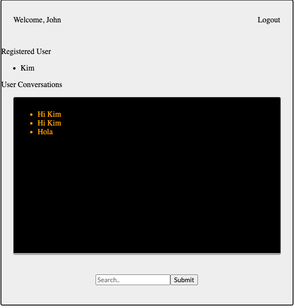

// Side project
Realtime Web Chat App

// About
A web-based chat app with jQuery, vanilla JS, and a Ruby on Rails backend. It could work as a live support widget for a website.
// Stack
// GitHub Links
Github Frontend Github backend// Video Walkthrough
Watch Video// Live
Live LinkProject Details
I wanted to build a single-page app with an HTML, CSS and JavaScript frontend and a Rails API backend. All interactions between the client and the server are handled asynchronously (AJAX) and use JSON as the communication format. Next steps for the project would be to enhance login and signup features with Oauth.
Web Stack and Explanation
This application uses Object Oriented JavaScript (classes) to encapsulate related data and behavior. The domain model served by the Rails backend includes associations with User, Conversation, and Message. The client makes AJAX calls covering CRUD actions, using fetch with the matching HTTP verb, and the Rails API follows RESTful conventions.
Problems and Thought Process
The main problem was refreshing the screen at a sensible interval. I used setInterval to request the updated conversation on a timer.